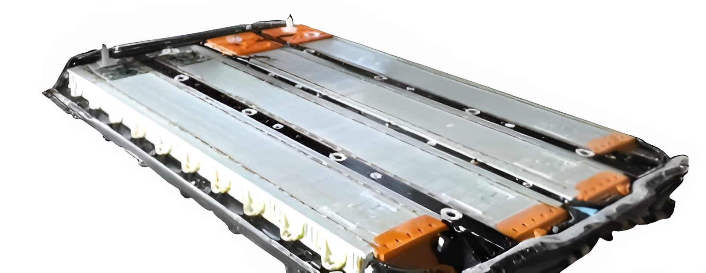

Greeenwashing has become a large problem in the last few years, and one of the main users of it is the EV market. Many companies claim to be environmentally friendly, but in reality, they are not. This website will explore the issue of greenwashing in the EV market and provide examples of the misinformation being spread.
The development process of EVs is much more tedious and time consuming than that of traditional cars. EVs require batteries to function, and those batteries require extensive mining.

Mining isn't the only way emissions are released. After all, a car is only as green as its power source. Although electric cars are refered to as "zero emissions", the electricity that powers them actually produces a considerable amount of CO2. A large portion of the electricity generated in the US and China, where a lot of the cars are produced, use coal to produce the electricity. A single charging of the tesla model 3 would what doesn't seem like much, but adds up when you realise there are more than 3 million EVs just in the US.
All these emissions add up. Although electric cars produce less emissions than gas cars, it is important to remember that they still create plenty of CO2.
Although many sources claim it takes less than a year for the emissions of an electric car to break even with those of a gas car, it takes much longer than that.
Although those emissions are nothing compared to that of all the transportation that is used each year...
That's a lot of CO2...
Transportation alone makes up for 1/5 of all emissions, which equals 1267 tons or 705342 cubic meters.
In conclusion, although electric cars are a step in the right direction, they do have a dark side that many companies will cover up.